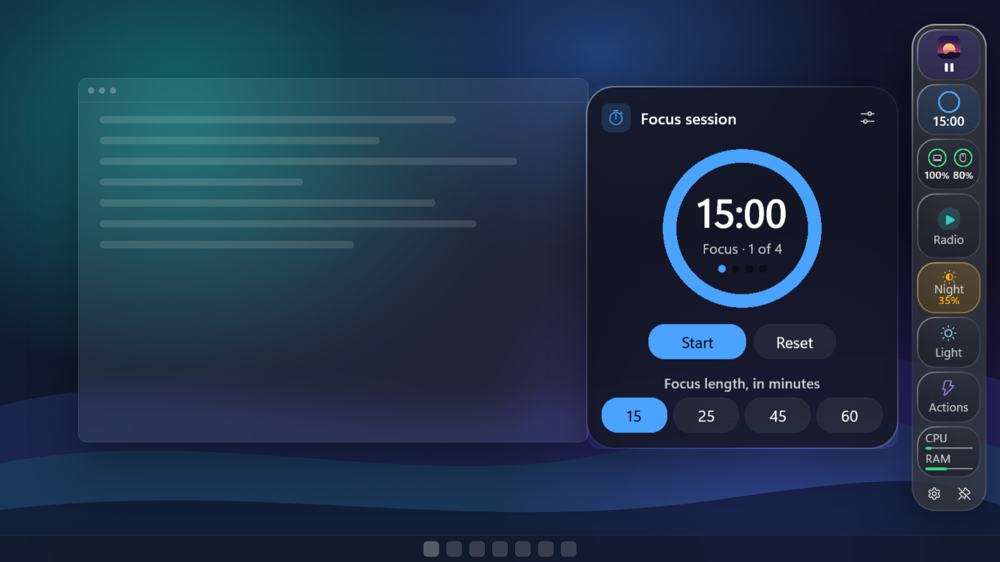
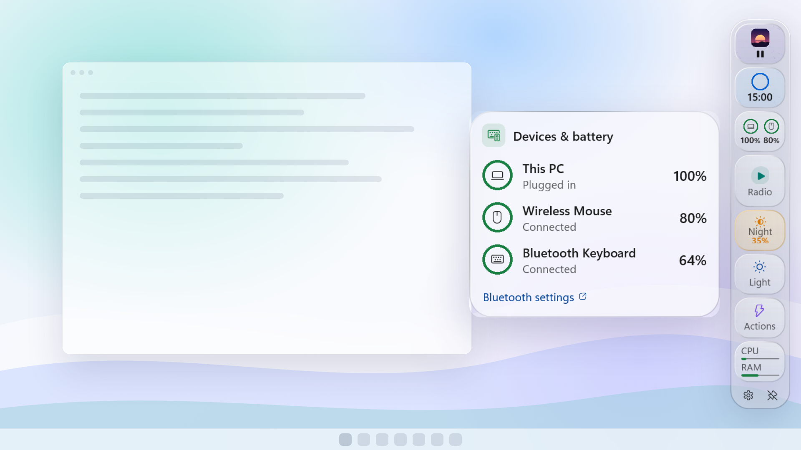
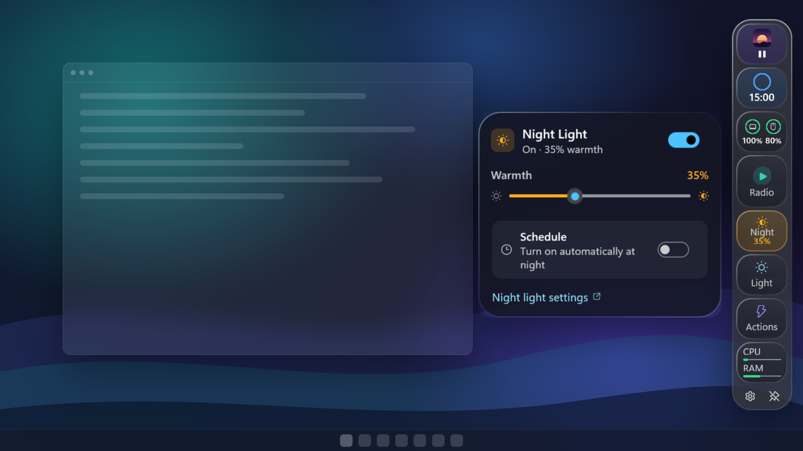

Your widgets, on the edge of your screen
Music controls, a focus timer, battery, system stats and more in one slim glass bar. Never touches your taskbar. Never steals window focus. One-time purchase, 7-day free trial on the Microsoft Store.
Built to be safe to try
Most Windows customization tools hook into File Explorer or patch the shell. Dockline never does.
Leaves Windows Alone
No shell patching, no DLL injection, no explorer restarts. Uninstall it like any normal Microsoft Store app with zero registry leftovers.
Never Steals Focus
Engineered with Win32 WS_EX_NOACTIVATE. Click buttons on the dock while typing in Word or VS Code—your keyboard cursor never moves.
Pure Native AOT
Compiled with .NET 10 Native AOT to direct x64 machine code. Launches in 0.35 seconds, uses less than 100MB of RAM, and idles at 0.2% CPU.
Stay in flow without checking your phone
Start Pomodoro-style focus sessions right from your screen edge. A gentle sound alerts you when it is time to stretch and rest.
- Survives auto-hiding with background timestamp tracking
- Automated mode switching into Focus profile when a session starts
- Gentle non-intrusive chimes and Windows notifications

Battery and Bluetooth peripherals at a glance
See your laptop battery level, charging speed, and connected Bluetooth mice and keyboards without opening Windows Settings.
- Queries real Bluetooth Low Energy battery service metrics
- Clear status for headphones that report charge state
- Zero background polling battery drain

A warmer screen for late evening work
Toggle Night Light and adjust its warmth slider immediately from the bar, backed by zero-latency GPU gamma ramp adjustments.
- Direct hardware gamma ramp adjustment across all monitors
- Syncs with native Windows 11 BlueLightReduction schedule
- Amber glow indicator informs you when warmth is engaged

One shortcut to switch your whole workspace
Create custom widget profiles for each part of your day and switch instantly with a hotkey or menu click.
Keep system gauges, peripheral battery states, and quick actions readily accessible during heavy multitasking.
Minimalist layout showing only your Pomodoro countdown ring and media controller to eliminate digital distractions.
High-contrast telemetry with CPU/GPU load, volume mute, and background Spotify controls for gameplay.
Warm amber Night Light controls, soothing ambient internet radio streams, and subtle clock display.
Everything you check all day, unified
Dockline comes out-of-the-box with nine dedicated, highly polished Fluent widgets.
Full access free for 7 days. No subscription, no account required, no ads.
Common Questions
Everything you need to know about Dockline on Windows.
Does Dockline replace or modify my Windows taskbar?
No. Dockline is a completely independent, floating edge bar. The Windows taskbar, Start Menu, and system tray remain 100% untouched. You can position Dockline on your right screen edge while keeping your taskbar at the bottom.
Which audio & video players work with Now Playing?
Any desktop app or web browser that exposes controls through the Windows System Media Transport Controls (SMTC): Spotify, Apple Music, Tidal, VLC, Edge, Chrome, Firefox, and YouTube.
Will Dockline cover my open windows or game screens?
You have full control: Float over windows (default), Auto-hide (reveals only when you point your cursor at the screen edge), or Reserve Space via native Windows Appbar so open windows snap neatly beside the bar.
Does it work on Windows 10?
Yes. Dockline supports Windows 10 version 2004 and higher with a clean solid backdrop, while Windows 11 unlocks full hardware-accelerated Mica and Acrylic blur effects.
What happens after my 7-day trial ends?
The bar gracefully closes and Settings provides a direct link to purchase the permanent license via the Microsoft Store. Your saved layouts, custom widget configurations, and profiles are preserved intact.
Do you collect telemetry or user analytics?
None. Dockline operates entirely locally on your machine with zero tracking scripts, zero advertising networks, and zero accounts. See our Privacy Policy.